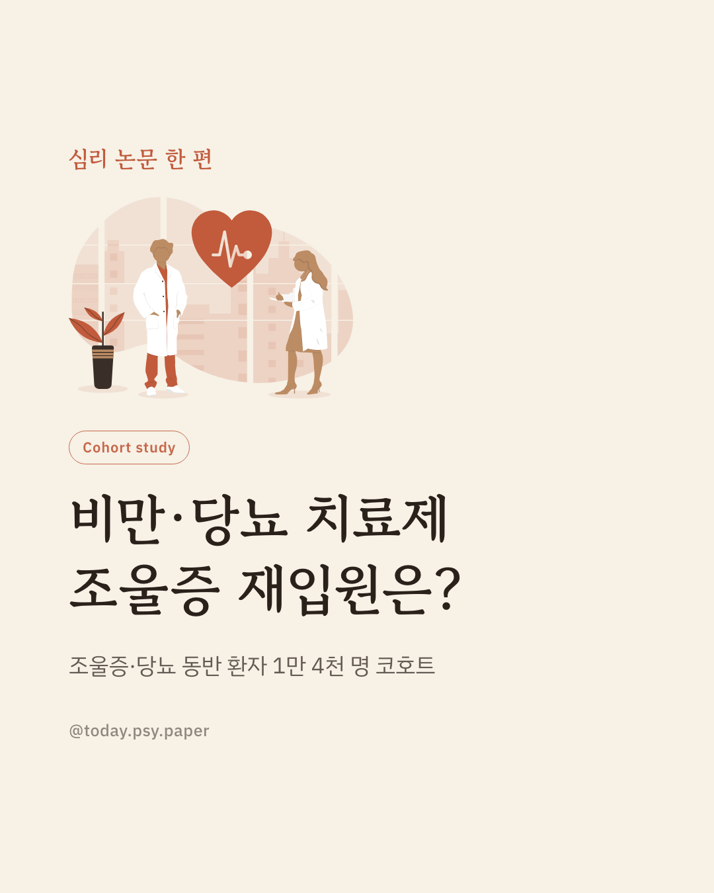
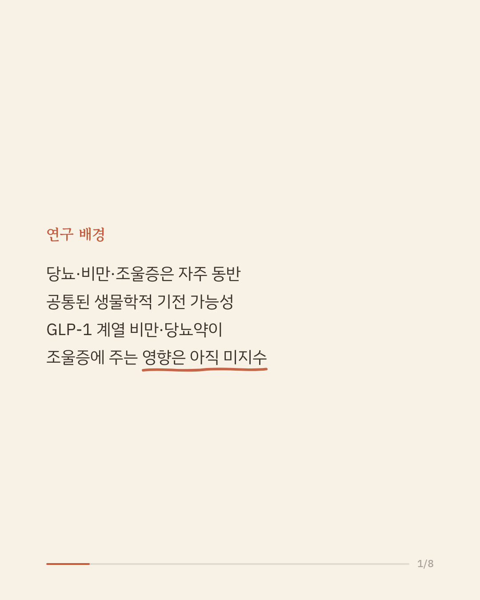
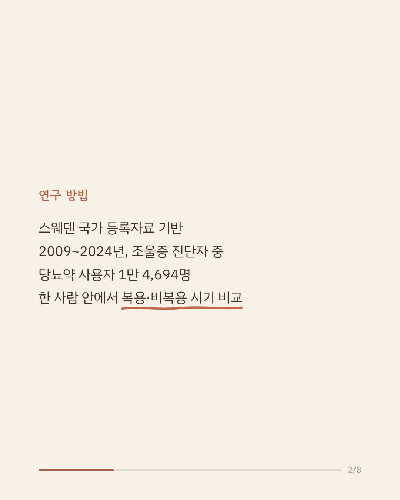
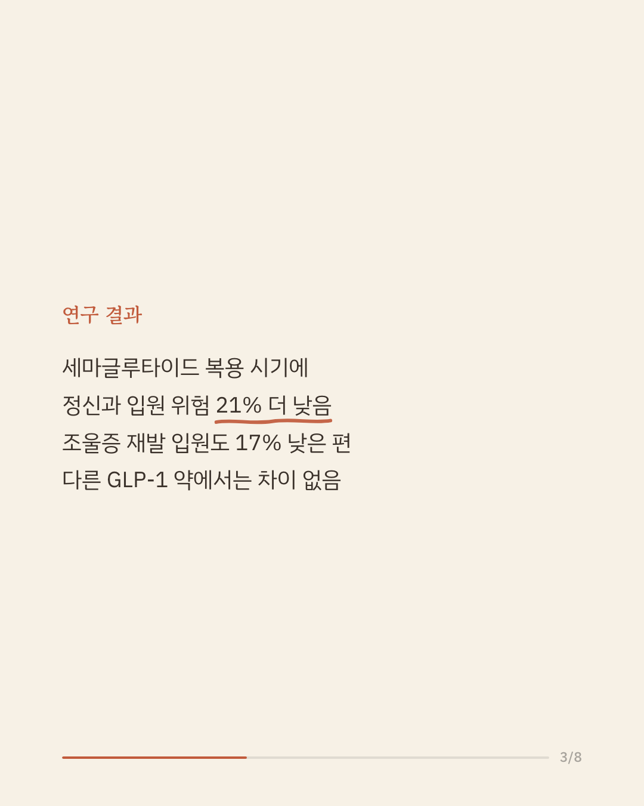
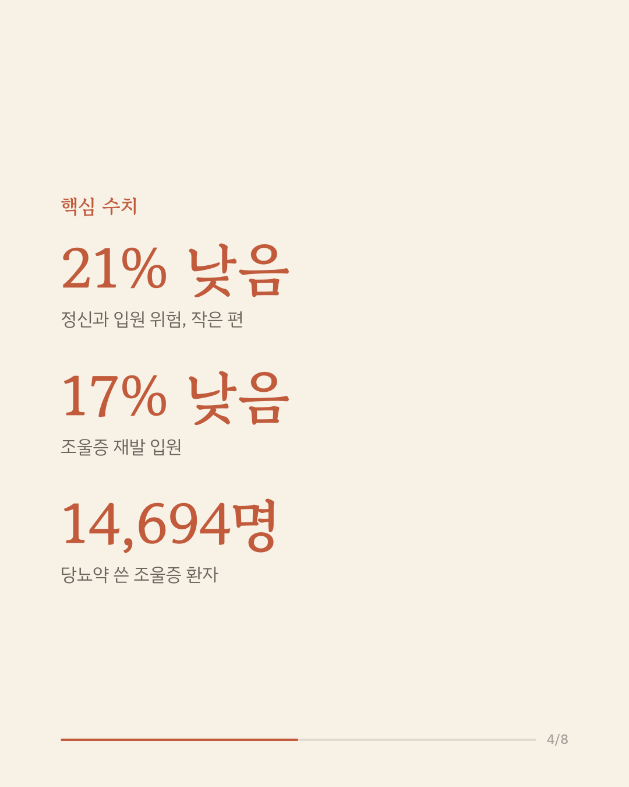
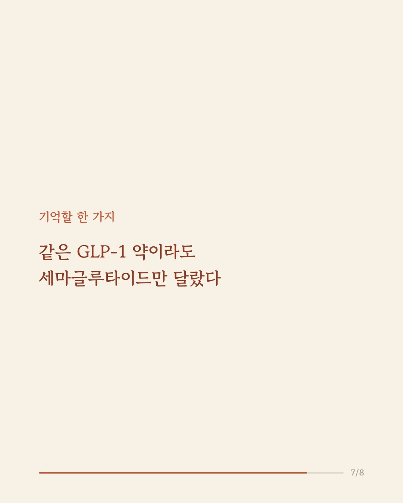
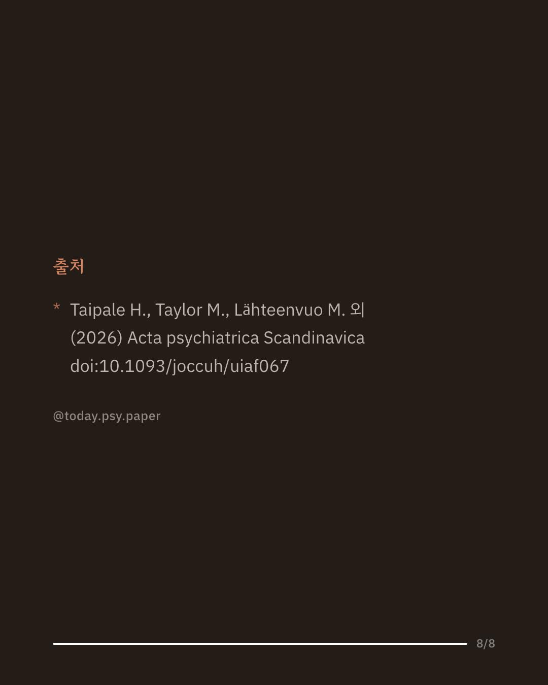

조울증은 당뇨나 비만과 자주 함께 나타나며, 서로 공통된 생물학적 배경이 있을 수 있다는 가설이 있습니다. 세마글루타이드 같은 GLP-1 수용체 작용제는 당뇨와 비만 치료에 널리 쓰이지만, 조울증 경과에 어떤 영향을 주는지는 알려져 있지 않았습니다. 스웨덴 연구진은 2009년부터 2024년까지 국가 등록자료를 이용해, 당뇨약을 처방받은 조울증 환자 1만 4,694명에서 GLP-1 약 복용 시기와 비복용 시기의 정신과 입원율을 같은 사람 안에서 비교했습니다. 세마글루타이드를 복용한 시기에는 같은 사람의 비복용 시기보다 정신과 입원 위험이 21% 낮았고, 조울증 재발로 인한 입원 위험도 17% 낮았습니다. 반면 리라글루타이드와 둘라글루타이드에서는 뚜렷한 차이가 없어, GLP-1 계열 전체의 공통 효과로 보기는 어려웠습니다. 조울증 약물치료가 오랫동안 정체된 상황에서 이 결과는 검증해 볼 만한 새로운 방향을 제시합니다. 다만 약을 무작위로 배정한 연구가 아니라 복용 이유나 건강 상태의 차이가 결과에 섞였을 가능성을 완전히 배제하기 어렵고, 단일 연구이므로 확대 해석은 조심해야 합니다. 출처: Acta Psychiatrica Scandinavica (2026), 'Use of Glucagon-Like Peptide 1 Receptor Agonists and the Associated Risk of Hospitalisation in Bipolar Disorder, From a Nationwide Cohort, 2009-2024' #임상심리 #정신건강정보 #양극성장애 #조울증 #정신의학연구
python3 publish.py 42324672